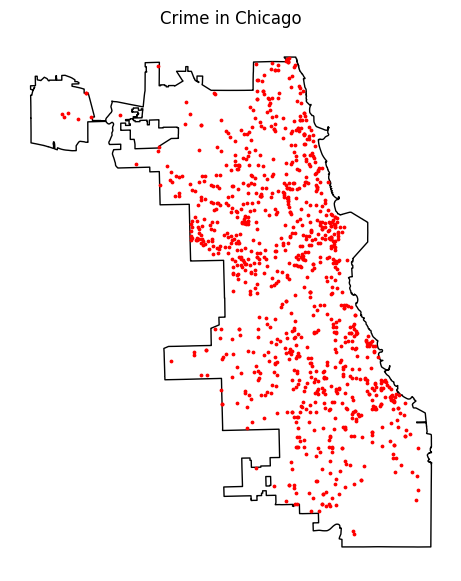
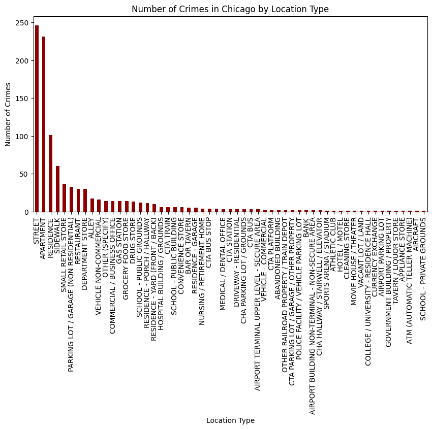
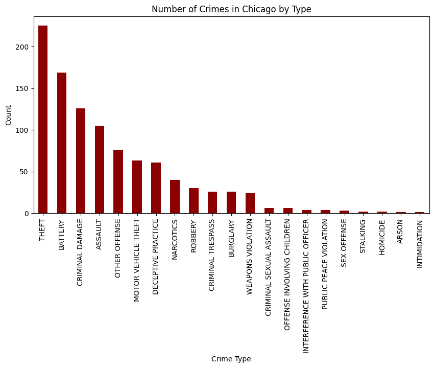
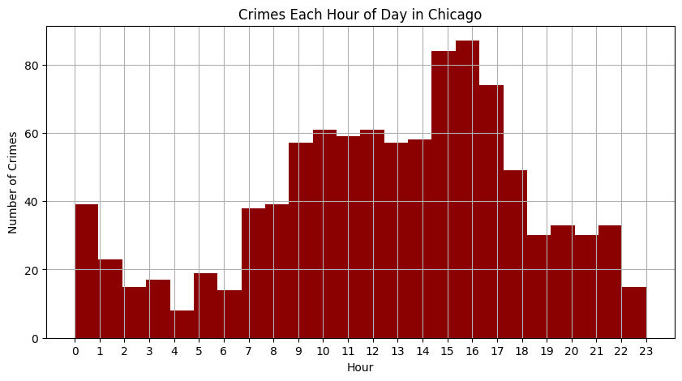
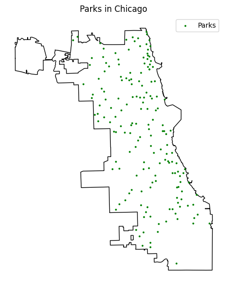
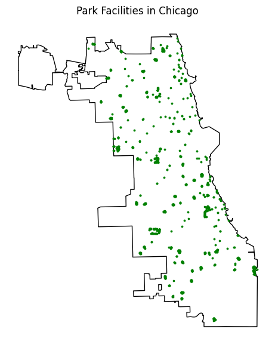
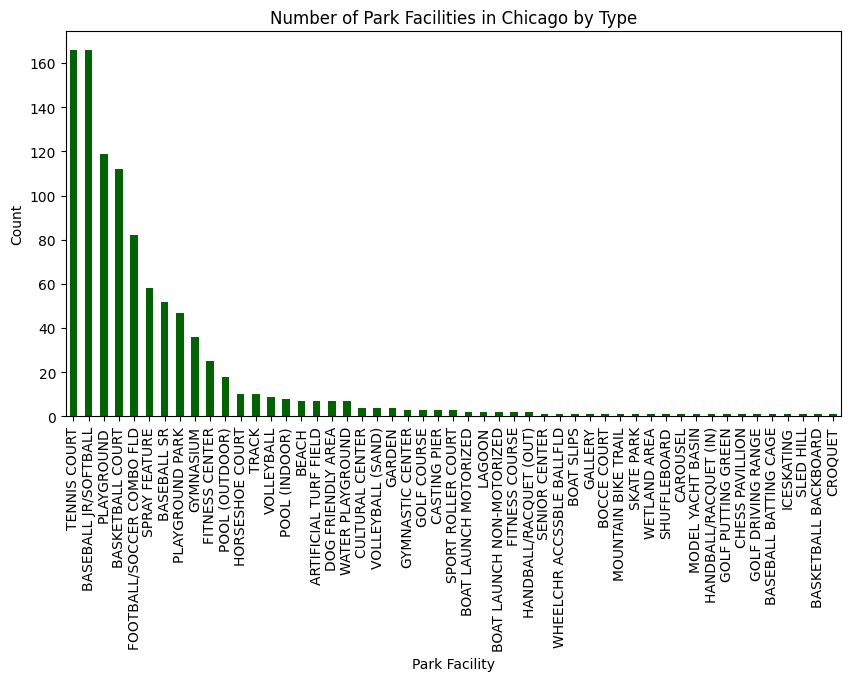

Crime vs Parks in Chicago: This visualization provides us with numerous insights about the relationship between crime and parks in Chicago. Many parks are located in areas that also experience crime, which indicates that the presence of parks alone does not eliminate criminal activity. Another insight is that high-crime clusters, specifically on the South and West sides, have fewer parks nearby, suggesting the limited access to green space and may correlate to higher crime concentrations. There are also parts of the city that have a high density of parks and comparatively fewer crime points. This can be seen particularly in areas of the North side and along the lakefront, which hints at a possible negative correlation between park density and crime in certain regions.
Crime in Chicago: This visualization shows the spatial distribution of crime that has occurred in Chicago within the last year. First off, crime occurrences are not evenly distributed. They cluster around on the South and West sides of the city, which reveal the hotspots of crime as opposed to uniform citywide activity. Second, there is a lower crime density in the northern, and far northwestern, areas of Chicago. Third, crime appears to follow the pattern of urban density. There are higher concentrations of crime in central, and highly populated, parts of the city. This demonstrates that there are higher chances of crime in areas where the population is greater. Overall, this visualization shows a baseline for understanding where in Chicago that crime is most prevalent.

Crime Locations: This visualizes the specific locations where crimes most frequently occur in Chicago. Crimes are largely concentrated in public and residential spaces, with streets and apartments having the highest number of crimes by a large margin. This suggests that crime is more common in everyday, high activity environments, instead of isolated areas. Parks and recreational areas account for a smaller number of crimes compared to locations like streets, sidewalks, and residences, which indicates that parks are not the only hotspot for crime occurrence. Lastly, the sharp drop off after the top few location types shows that crime distribution is highly uneven, with many location types experiencing very low incident counts.

Crime Types: This visualization shows that theft, battery, and criminal damage are the most common crime types that occur in Chicago. This exceeds more severe crimes such as homicide or sexual assaults. Property-related crimes such as motor vehicle theft make up a large proportion of incidents, which suggests that opportunity and accessibility plays a huge role in where crimes occur. Violent crimes appear at moderate levels, while specialized crimes such as narcotics or weapon violations are less frequent. When compared with the locations of Chicago parks, this distribution reveals that crimes near parks are more likely the cause of high-traffic public spaces rather than extreme violent behavior.

Crime Hours: This visualization shows that crime in Chicago is not evenly distributed throughout the day. There are noticeable peaks during late morning hours to early afternoon, and again in the early evening hours. Crime levels are lowest during the early morning hours, specifically around 4:00-6:00 AM, when public activity is at a minimum. The increase in crime during midday and evening likely correlates to the higher population movement and recreational activity, including park usage. When considered alongside park locations, this pattern demonstrates that crimes near parks could be influenced by times of increased foot traffic instead of just a random occurrence.

Parks in Chicago: This map shows the spatial distribution of Chicago parks, providing useful context for analyzing their relationship with crime. Parks are widely dispersed throughout Chicago, and not in a single concentrated area. Most neighborhoods have access to a park nearby. There is also a higher density of parks along the north and central portions of the city, while the southern and far-western areas are sparsely covered. This reveals there is uneven access to parks by region. Because parks are embedded within residential and urban areas rather than isolated areas, the correlation with crime is most likely influenced by the surrounding neighborhood characteristics such as population density and nearby streets rather than the presence of parks alone.

Park Facilities in Chicago: This visualization highlights the spatial distribution of park facilities in Chicago. This map shows all the facilities each park offers and their locations. These facilities are widely distributed throughout the city, which indicates that there is some sort of intentional effort to provide parks across many neighborhoods, not concentrating them in a single area. There is also a prominent clustering of parks along the lakefront and areas of the North Side, which demonstrates the planning priorities that are centered on recreation and accessibility. Lastly, while there are parks on the South and West side, they are more dispersed compared to northern regions, which are more cluttered. This map provides a point of comparison for crime data.

Park Facility Types: This visualization shows the distribution of the offerings of different parks in Chicago, highlighting the types of parks that crimes most occur near or in. Baseball courts and tennis courts appear most often, which reveals that crimes are more likely to occur near highly common and heavily used park facilities. Also, playgrounds and basketball courts have relatively high amounts of crime, which may be a result of increased activity and foot traffic. In contrast, specialized parks such as skate parks or croquet courts show a low count of crime, which tells us that crime locations are more strongly correlated with the amount of usage of park types, rather than the presence of parks alone.
